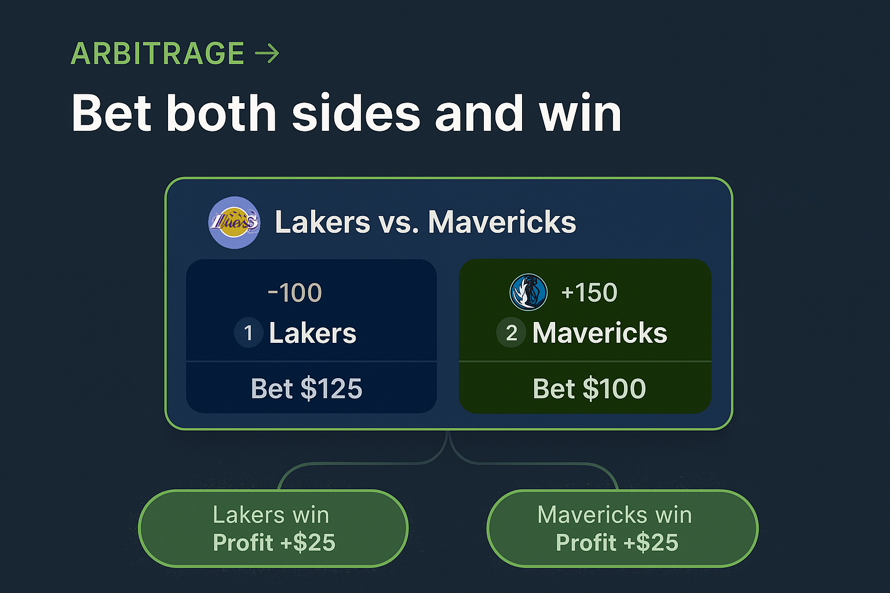
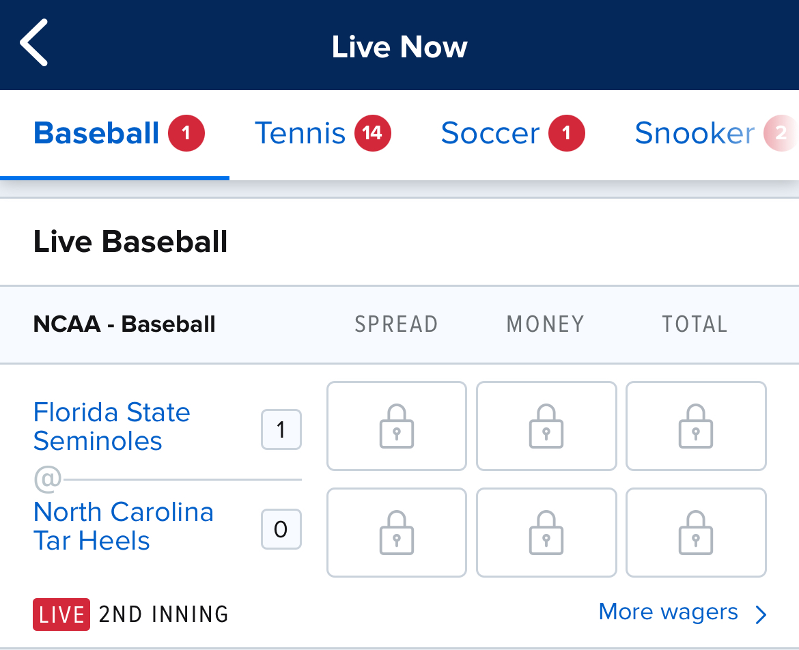

What is Arbitrage betting?
Arbitrage sports betting is when you place bets on all possible outcomes of a sporting event using different sportsbooks in order to guarantee a profit—no matter who wins.
Is there any risk to this?
Yes, there is always risk when it comes to sports betting. If someone says their isn't then they are lieing or just uneducated. With +EV betting you are playing the long game, you will have winning days and losing days. That's why bankroll management is super important. When it comes to arbitrage betting, mainly the only risk is not getting both sides of the bets down. Like for example you might get one bet down but the other sportsbook might change the odds or lock the bet to fix the odds.
